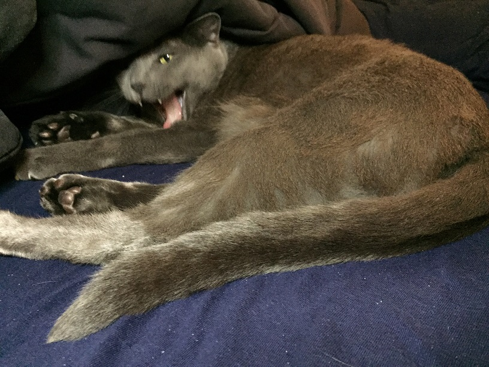

Rocky is Great
I can not express enough just how much Rocky has helped me throughout my life.
He calmed me when I was anxious, he comforted me when I was distressed, and he yawned at me when it was getting late.
A Light in the Dark
There have been times in my life when I was in very dark places, and had been seriously considering actions that would have ended poorly for me.
In those times, it was the thought of Rocky missing me that saved me.
I know with certainty that Rocky is a guardian angel to me, and I thank God for allowing me to care for my boy for over 12 years now, as they both continue to care for me.
